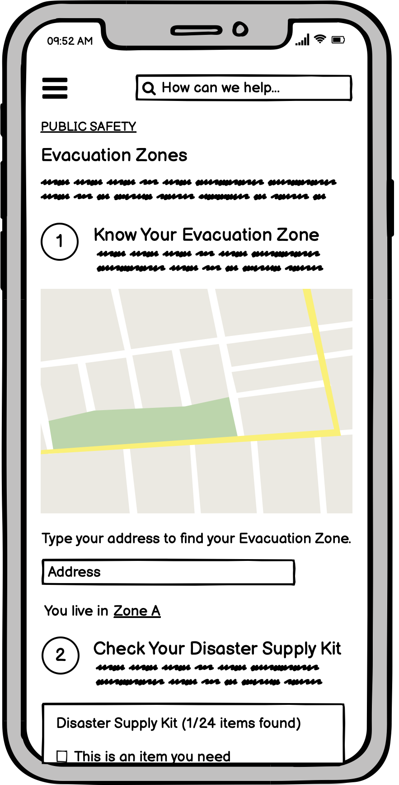

redesign
Rethinking the Laguna Niguel Evacuation Zones web page.
This five-part project involved analyzing and reconstructing the Evacuation Zones webpage for Laguna Niguel, CA.
one
current design
The following is a screenshot of the current Laguna Niguel Evacuation Zones page. Click through the following tabs to read about identified problems.
learnability
memorability
efficiency
accessibility
Primary functions of web page (finding your evacuation zone, understanding what you may need in event of a fire) are hidden within a large body of text and menus
Secondary functions (subscribing to fire/emergency alert services) require scrolling to very bottom of page, these can also be confused with the large “Notify Me” button
Users may remember a large blue button that says “View Evacuation Zone Map” if they have seen the page before, however this button is not immediately visible and requires scrolling past a large body of text.
The Evacuation Zones page is contained in Home>What’s New>Public Safety pages, which is entirely unintuitive, as there also exists a tab for Emergency Preparedness
Users who want to check their evacuation zone must scroll through the page, open up a PDF containing a map of the evacuation zones and find their address on the map — this takes significant effort
Users who want to review their fire preparedness must scroll through the page, open up a PDF first containing the map, scroll through the PDF to a page with a 2D grid of items, then if the user wants to check items off they must print the sheet
WAVE detected contrast errors with the call-to-action text directing users to subscribe to emergency alert services. I definitely agree with the findings — the page uses a pale green color for this text — it’s used nowhere else on the page, it’s hard to read, and it doesn’t communicate that it’s an important item for users to complete for emergency preparedness

two
wireframes
The following are low-fidelity wireframes in desktop, tablet and phone sizes.
Desktop
Tablet
Mobile

three
style guide
The following is a style guide for the redesigned web page.
four
prototype
The following is a hi-fidelity prototype for the redesign in desktop, tablet and mobile sizing. Attached are annotations describing the responsive layouts using flexbox.
Desktop
Tablet
Mobile
five
page
Here is a link to the fully-redesigned layout!
Try out the responsiveness by changing the width of the screen.